In China Employee Termination: Pulse Command-Center Brief for Foreign Employers (2026 Testing Run)
Key takeaways
- Foreign employers should run China termination cases through a command-center model with live control signals.
- Legal route context must lead, but real-time control over evidence, communication, and settlement determines outcome quality.
- Most avoidable disputes come from control drift during execution, not from the initial policy design.
- Payroll and IIT status should be visible control signals, not hidden back-office tasks.
- Command-center discipline improves cross-border coordination and faster escalation.
Pulse lead: what matters this hour
In China termination work, many global teams have decent policies but weak live visibility. They know the planned route, but not whether evidence is complete today, whether manager messaging is still aligned, or whether settlement figures are locked before communication. That visibility gap is where risk grows.
This run uses a command-center format: a control room view where each critical signal is monitored in real time before and during execution.
Plain-language legal/regulatory context first
China’s Labor Contract Law sets the legal framework for employer-initiated termination. State Council implementation rules and SPC judicial interpretation shape how disputes are assessed in practice. For foreign operators, the practical meaning is direct: legal route validity is necessary, but defensibility depends on whether operations stay coherent under live conditions.
A command-center approach helps because it treats legal compliance as an actively monitored system, not a one-time checklist.
Command-center signal board
Signal 1: Route integrity
- Green: route memo approved, legal anchor clear, no conflicting narratives.
- Amber: factual gaps or route ambiguity requiring legal recalibration.
- Red: conflicting route narratives or missing legal signoff.
Signal 2: Evidence integrity
- Green: dated, objective, centralized records with coherent chronology.
- Amber: minor gaps with remediation in progress.
- Red: critical missing records or backfill risk.
Signal 3: Communication coherence
- Green: script, notice, and meeting protocol aligned.
- Amber: manager readiness concerns or translation mismatch risk.
- Red: script-document contradiction or uncontrolled messaging.
Signal 4: Settlement certainty
- Green: severance/wage/leave/IIT model locked and approved.
- Amber: one unresolved calculation dependency.
- Red: unsettled payout logic or unclear IIT treatment.
Signal 5: Exception readiness
- Green: refusal protocol and escalation path pre-approved.
- Amber: partial contingency documentation.
- Red: no executable fallback under friction.
Practical implications for foreign employers
- A live signal board prevents late surprises.
- Leadership can make faster calls with objective status signals.
- HQ-local alignment improves when everyone sees the same control state.
- City-level variance can be encoded as tighter or looser amber/red thresholds.
For foreign HQ teams, the command-center view also improves governance quality: it replaces narrative updates with objective status signals, so decisions on delay, escalation, or conditional approval can be made quickly with clearer accountability and less cross-functional friction.
Daily operations SOP (role-by-role)
Step 1: Open control room (HR + legal)
Create case control board with five signals and owners.
Step 2: Calibrate route/evidence signals (HR + legal + manager)
Validate legal route and record readiness before final scheduling.
Step 3: Lock settlement signal (Payroll + finance + HR)
Freeze payout/IIT model and approval trail.
Step 4: Validate communication + exception signals (HR + manager + legal)
Run final script check and fallback readiness check.
Step 5: Execute with live monitoring (HR owner)
Track signal changes in real time during meeting/service/payout trigger.
Step 6: Post-event debrief (Legal + HR + payroll)
Review signal transitions, close gaps, and archive evidence within 48 hours.
Required document checklist
- Route memo and risk note
- Evidence index and integrity log
- Communication package and approval log
- Settlement worksheet + IIT note + version ID
- Exception protocol and escalation tree
- Signal board snapshots (pre/during/post)
- Event log and receipt/service records
- Closure archive manifest
Exception handling playbook
Signal turns red before meeting
Pause execution and escalate per control owner matrix.
Signal turns red during execution window
Trigger contingency protocol and suspend non-essential actions.
HQ requests proceed despite red signal
Require formal risk acceptance with named approver and rationale.
New fact changes route feasibility
Reset signal 1 and revalidate downstream signals before proceeding.
System implementation notes
Add command-center fields in HRIS/payroll workflow:
- Signal status fields (S1-S5)
- Timestamped status transitions
- Red/amber trigger codes
- Override and approver log
- Settlement lock + IIT logic fields
- Post-event debrief status
Common mistakes and prevention
Mistake: no live status visibility
Prevention: mandatory pre/during/post signal snapshots.
Mistake: settlement hidden from control board
Prevention: settlement as a first-class signal.
Mistake: overrides happen informally
Prevention: explicit override governance and audit trail.
Mistake: no learning from signal failures
Prevention: monthly red-signal root-cause review.
What to do now
- Deploy five-signal command-center board for active cases.
- Assign owner and escalation rule for each signal.
- Require settlement signal green before communication.
- Add bilingual communication controls where needed.
- Run simulation on one pending medium-risk case.
- Capture red-signal triggers and remediation time.
- Tune thresholds by city/entity.
- Report weekly signal health to leadership.
- Archive signal history for audit defense.
- Recalibrate in each hourly quality loop.
Signal KPI dashboard
Track weekly: red-signal rate at first review, average red-to-green remediation time, and post-action incidents by signal category. Add one decision-value metric: percentage of cases where early red signals changed route or timing before employee-facing action. These indicators show whether live control maturity is improving and whether the system is actually preventing avoidable disputes.
Command-center rollout note
Start with a lightweight board in one entity for two weeks, then standardize signal definitions before rolling out region-wide. This prevents metric noise and helps ensure red/amber statuses mean the same thing across teams.
What to watch next
- Continued scrutiny of evidence/process coherence.
- Persistent settlement/tax transparency as dispute driver.
- Ongoing city-level practice variability.
- Rising value of real-time governance in cross-border operations.
FAQ
Is command-center tracking legally required?
No. It is a governance method to reduce avoidable execution risk.
Can a case proceed with amber signals?
Yes, if conditional controls and ownership are explicit.
Why elevate payroll to control-room level?
Because settlement and IIT issues frequently trigger disputes.
Is this overkill for smaller teams?
No. Teams can simplify signals while keeping red/amber discipline.
When should external PRC counsel be mandatory?
High-risk unilateral routes, restructuring, refusal scenarios, protected-sensitivity cases, and multi-city complexity.
Legal depth appendix (secondary)
This brief is grounded in the PRC Labor Contract Law, State Council implementation regulations, and SPC labor-dispute interpretation guidance. Their combined practical implication remains consistent: route legality, procedural fairness, and documentary reliability must align through settlement completion.
Disclaimer
This content is informational only and not legal advice. China labor outcomes are fact-specific and locally sensitive. Seek qualified PRC legal advice before action.
Sources
- National People’s Congress. Labor Contract Law of the PRC (English). http://www.npc.gov.cn/zgrdw/englishnpc/Law/2007-12/13/content_1384064.htm (accessed 2026-03-01).
- State Council. Regulations for the Implementation of the Labor Contract Law (Decree No. 535). https://www.gov.cn/gongbao/content/2008/content_1124615.htm (accessed 2026-03-01).
- Supreme People’s Court. Interpretation on labor dispute application issues (Fa Shi [2020] No. 26). https://www.court.gov.cn/fabu/xiangqing/243981.html (accessed 2026-03-01).
- China Briefing (Dezan Shira & Associates). Employee Termination in China (updated 2025-10-17). https://www.china-briefing.com/news/employee-termination-in-china/.
- Littler. Key Recent Developments in China’s Employment Law (2024-03-20). https://www.littler.com/news-analysis/asap/key-recent-developments-chinas-employment-law-china-us-comparative-perspective.
- PwC Worldwide Tax Summaries. People’s Republic of China: Individual Taxes on Personal Income (2025-01-15). https://taxsummaries.pwc.com/peoples-republic-of-china/individual/taxes-on-personal-income.
Need help from China-Payroll.com?
China-Payroll.com supports foreign employers with compliance-first termination operations, integrating legal route governance, payroll settlement certainty, and evidence-ready execution controls.
Need local employment support in China?
If you need a compliance-first partner for hiring, payroll, and risk controls in China, China-Payroll.com can help evaluate the right setup.
Image Prompt Pack
Create a 16:9 hero image for article title: 'In China Employee Termination: Pulse Command-Center Brief for Foreign Employers (2026 Testing Run)'. Scene: global operations team evaluating workforce model options for China market entry. Include motifs: decision …